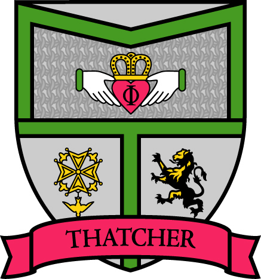

“Being powerful is like being a lady. If you have to tell people you are, you aren't.” -Maggie T.
Mission
-
The House of Margaret Thatcher exists to be a faith-deepening, gift-illuminating sisterhood founded in courageous love.
Values
-
Iron Love:
Margaret Thatcher was called the “Iron Lady” for her fierce devotion to what she believed. We want our love to be the same. We aim to love with conviction, to love when it’s hard, to be women of tough love.
-
Harmony:
In a chord, separate notes sound coincidentally to form a rich sound. We want the house to work in the same way. As many individuals thrown together, we seek to encourage the strength and beauty in each member. As notes in a chord, we want to compliment and accentuate the best in each other.
-
Deep Well:
Instead of shallow relationships, we want this community to model a well that is deep, transparent and fluid. We want to be intimately connected to each other lives through the good and bad, the easy and the hard. This value summons iron women to seek out the reality rather than the perception of all things.
Crest
In other words, we keep it real. We realize that life isn’t its fullest without belonging to a community.